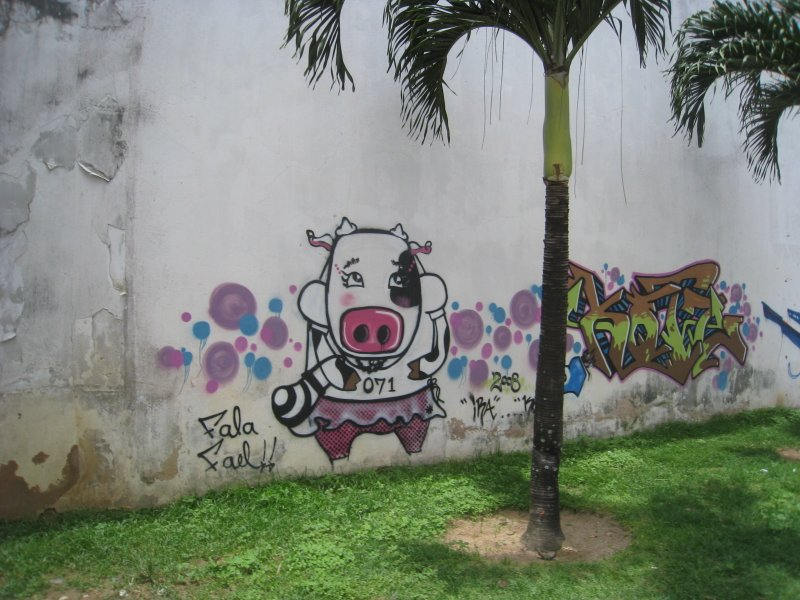

Salvador, Brazil
Our first sights in Salvador on the way into town from the airport. Very blocky.
We arrived at our very charming hotel and climbed a spiral staircase to the room.
Where we found a lovely view of the industrial port. If it hadn't been 90 degrees, I might have thought I was in Vladivostok.
But at least we had a nice pool in which to float while taking in the view.

The view from the bar was much nicer.
Somewhat delirious from jetlag and our first (incredibly strong) caipirinha, we wandered into the crowded streets.
Where we found strange works of art.

Gracefully aging churches.
Fading pastel colonial architecture.
And we found out what Santa gets up to the other eleven months of the year.
The squares were densely populated with vendors intent that you not suffer for too long without a cocktail in your hand.
There were also many stray cats.
And inscrutable public art.
I much preferred the graffiti, which was stylish and sophisticated.

Here we have a scathing condemnation of the impact of gender roles among the bovine population of urban Brazil.
Here we have a polka dot building.
Here we have a reminder that Jesus died for our sins.
The central area of Salvador is split quite dramatically between an uptown and a downtown.
Eventually we made our way down the hill to a big market by the harbor.
Under which were spooky catacombs wherein slaves were once traded.
There was more excellent urban art down the hill.
On the day before we left, the entire town took the day off and had a giant party. Not on account of our departure, I presume.
At the party we bumped into Barack Obama's secret younger brother. Unfortunately I didn't get a clearer shot of him. The secret service mind control rays were probably interfering with the camera.
Morro de Sao Paolo, Brazil
We then hopped onto this tiny plane and flew to the nearby island of Morro de Sao Paolo. Anita didn't like the idea of taking the two hour boat ride. By the end of the brief but bumpy plane trip, she was a much bigger fan of boat travel.
We had to make hotel reservations at the last minute. After five phone calls that exhausted my tiny Portuguese vocabulary, we ended up at the modest, but plucky Village Paraiso Tropical.
It wasn't posh, but the bar by the beach was quite nice.
Here we see the two main modes of transportation on the island: foot and tractor.
Some local charm: a fishing scow and butts.
As is my habit, I spent some of my time on the island upside down.
Buenos Aires, Argentina
We then departed Brazil and headed to Buenos Aires. Our first stop was San Isidro, a sort of Argentinian Beverly Hills. We were staying in a colonial mansion that had been converted into a hotel.
The room was tastefully decorated.
Jesus was on the job nearby.

Food in Brazil ranged from "not very good" to "gives you food poisoning", so we were ecstatic to be somewhere that we could order a salad. The salads at this charming little bistro were worth writing home about.
We became very familiar with our local stop on the Tren de la Costa, because it turns out that San Isidro is a long way from anything interesting.
The train, on the other hand, was quite interesting.
Not to be outdone by Brazil, Argentina had a respectable supply of stray cats on display.
Eventually we made our way to the Plaza de Mayo, wherein the tourists and government officials rubbed elbows.
Said government officials all worked in the Pink House. Perhaps President Obama will take home some exterior decorating ideas from his next state visit to Argentina.
Tucked into a nearby courtyard, Baby Jesus could be seen cavorting with every kind of ruminant to be found within five hundred miles of the fertile crescent.
I eventually turned my attention to the local wildlife.
The most popular species of which was canis lupus familiaris. There were more pet stores in Buenos Aires than there are Starbucks in Seattle.
Touring around the city on foot, we saw thin towers...
We stopped in at the MALBA.
Where the architecture was more interesting than the art.

Departing the museum we had to cross this perilously wide street.
On the other side we encountered a fleet of scooters ready and waiting to deliver icy cold relief to desperate Argentinians suffering in the heat.
We relocated to San Telmo (after a few days in Palermo wherein I seem to have taken no photos). From our balcony we were greeted by the full majesty of central Buenos Aires.
San Telmo had some lovely local markets.
And more excellent graffiti.
Some with a cubist influence.
And some more minimalist.
We discovered in our wanderings that Buenos Aires has streets named for every country in the Americas. Eventually we found the one for the good old US of A. Not very glamorous.
My white linen pants had been dreaming of this trip ever since they joined my wardrobe.
San Telmo was a happening spot in the early 1900s, then everyone fled due to a cholera outbreak. In the intervening 100 years it's become a bit rougher around the edges, but hasn't lost its charm.
They do, however, seem to have forgotten that very important lesson about infectious disease.
In places, echoes linger of a more erudite age.
One day, we headed toward the Recoleta, where the rich relocated after the cholera. Along the way we encountered experimental new advertising techniques.
We also encountered very impressive residences.
Our destination that day was an enormous cemetery. Just before we arrived, we encountered an even more enormous tree.
The trunk was fenced off, perhaps to spare this ancient beast the indignity of having teenagers carve their fleeting passions into its roots.
As we wandered in search of dead people, I eventually spied this pious image and suspected we were on the right track.
It's hard to convey the size of this cemetery. There were dozens of little alleys branching every-which way. It was a sprawling metropolis of death.
Here we catch Anita gently rapping, rapping at the chamber door.
I didn't frame this shot intentionally. Clearly it's a sign from the heavens.
This was a not so successful attempt to have my ghostly visage appear to descend the stairs into the tomb below.
Creepy spider webs were in plentiful supply. I thought they made that up in vampire movies, but spiders really do love crypts.
This filing cabinet for corpses had lost a door. I waited expectantly for the lid to slide slowly off the coffin and a withered hand to reach out, but no such luck.
Many tombs had angels and other heavenly figures gracing their exteriors.
And the Burton family has a plot here in Buenos Aires it seems.
During the entire trip, the weather forecast had been incorrectly predicting rain. Just before we left, they finally got it right.
When the rain finally stopped, we were treated to this cheerful sight, with which I'll end this photo tour. So long Argentina and thanks for all the sweets.